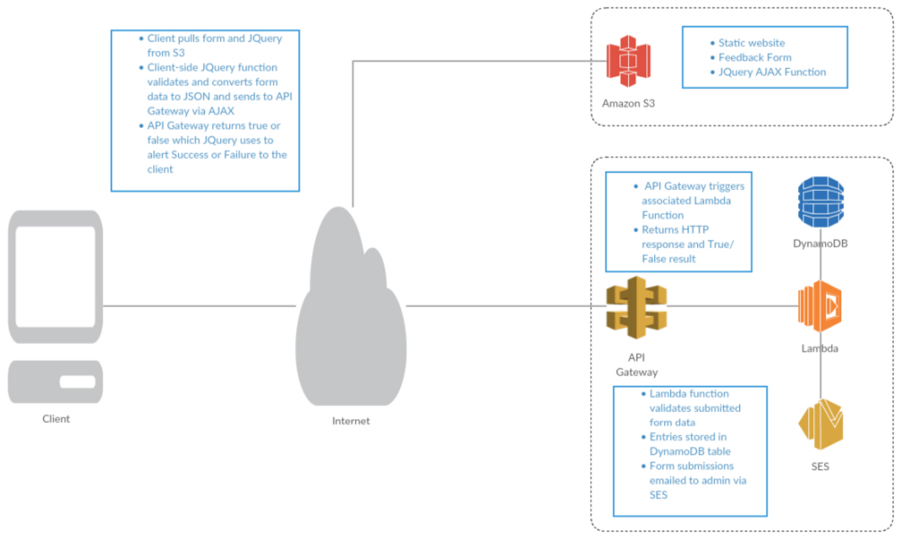

Serverless feedback form using S3, Lambda, DynamoDB, SES, and API Gateway

SES
- Verify a New Email Address (email address you control where feedback will be sent)
- Make note of the verified email addresses for use in the Role in the Lambda section.
DynamoDB
- Create Table
- Name it ‘feedback’
- PrimaryKey ‘datetime’ (string)
- Make note of the ARN for the role in the next section.
Lambda
- Create Lambda function (use blueprint ‘microservice-http-endpoint’)
- Name the function ‘feedback’, make sure runtime is node.js
- Leave the code as-is for now, we’ll update that later
- Role: Create a new role based off of ‘*Basic with DynamoDB’
- Name the role ‘lambda_dynamodb_feedback’
- Edit the policy with the contents of lambda/lambda_dynamodb_role.json
- Edit the json resource with the ARN of your dynamoDB
- Edit the json conditions with the verified email address(es)
- Set API endpoint type to API Gateway
- Select the feedback gateway created in the API Gateway section
- Select POST for Method
- Select Open for Security
- Review and [Create Function]
- Now replace the lambda code with the contents of the lambda/lambdafunc.js > [Save and Test]
- Choose sample event template ‘Hello World’ and use the following:
{
"name": "Test Name",
"email": "email@test.com",
"subject": "Test Subject",
"message": "This is the test message."
}
- You should receive “True”, also the test items should be in the DynamoDB table and in the CloudWatch Logs and you should receive the test via email.
API Gateway
- Create API gateway
- Select Resource / > [Create Resource]
- Name the resource ‘feedback’ with the same resource path (autopopulated)
- Select the new feedback resource > [Create Method] > Select ‘POST’
- Select ‘Lambda Function’ for Integration type and choose a Lambda Region
- Make note of the region as the lambda function and dynamoDB will use the same
- Select the Lambda Function field and begin typing ‘feedback’, your function created below should be offered as a suggestion.
- [Enable CORS] (keep defaults and [Enable])
- [Deploy API]
- Select New Stage and name it ‘prod’
- Make note of the Invoke URL for use in the front-end feedback.js file that is placed in S3.
- Select Resources > POST > TEST. Use the sample event from the previous step as the Request Body and click [Test]
S3
- Create an S3 bucket
- Name it exactly the same as the domain you will be directing to it (eg: feedback.mydomain.com)
- Configure it to serve as a website according to the following:
-
http://docs.aws.amazon.com/gettingstarted/latest/swh/website-hosting-intro.html
- Place the API Gateway URL from the previous step in the feedback.js
- Upload S3 files to new bucket.